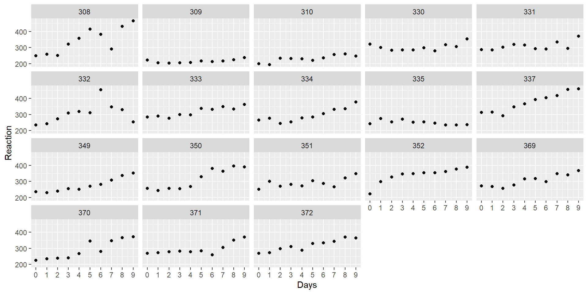
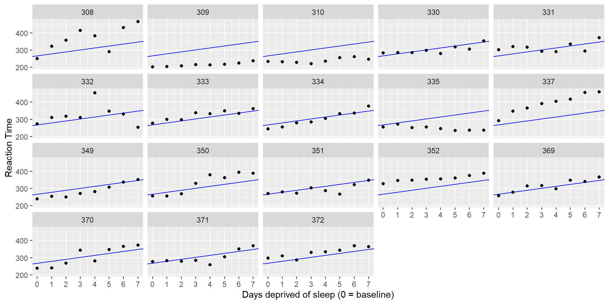

12 Linear Mixed Models
Course: “Biostatistics”
Translational Neuroscience
Linear Mixed Models
This week will be based on parts of a different textbook: Learning Statistical Models Through Simulation in R.
We will cover Linear Mixed-Effects Models (LMM), which are a generalization of linear models, but they allow us to include so-called random effects, e.g., for the deviation of subjects from the average effects. This is especially helpful if we have within-subject variables. LMMs are a lot more flexible than (repeated-measures) ANOVAs.
Setup
We will use a package called lme4 for the statistical models. The package includes a dataset called sleepstudy, which we will be using. You don’t have to load the data separately, just load the package and you have access to the data:
Description:
The average reaction time per day (in milliseconds) for subjects in a sleep deprivation study.
Days 0-1 were adaptation and training (T1/T2), day 2 was baseline (B); sleep deprivation started after day 2.
Format:
A data frame with 180 observations on the following 3 variables.
‘Reaction’ Average reaction time (ms)
‘Days’ Number of days of sleep deprivation
‘Subject’ Subject number on which the observation was made.
Multilevel Data
Multilevel data are nested data, which means that they are clustered:


- For example, repeated measures of the same subjects will result in data that are often more strongly correlated within subjects than between.
- But LMMs can also account for other kinds of nesting/clustering, such as patients who share therapists or mice from the same cage/experimenter.
Data is usually multilevel for one of the three reasons below (multiple reasons could simultaneously apply):
you have a within-subject factor, and/or
you have pseudoreplications (several trials/measurements), and/or
you have multiple stimulus items (this rarely is accounted for in a statistical model :( ).
Multilevel Data 2
Multilevel data are nested data, which means that they are clustered:
Multilevel data are extremely common in neuroscientific research!
Unfortunately, LMMs are hardly every covered in statistics classes. Instead, these data are often analyzed using t-tests or ANOVAs, but sometimes these models are not sufficient.
Moreover, LMMs have less of a problem with missing data.
The Sleepstudy Data
In the dataset, we have measurements of 18 participants across 10 days of sleep deprivation. Each day, the participants performed a “psychomotor vigilance test” during which they had to monitor a display and press a button as quickly as possible as soon as a stimulus appeared.
The dependent measure (DV) is response times (RT).
Let’s take a look at the data, with a separate plot per participant:
It looks like RT is increasing with each additional day of sleep deprivation, starting from day 2 and increasing until day 10.
Preparing the Data
We have some more information about the model that is helpful:
The first two days were adaptation and training, the third day was a baseline measurement (8h time in bed)
On the 4th day (until the 10th, so for 7 days), the sleep deprivation began:
- There were four groups: 9h, 7h, 5h, 3h time in bed
We thus have to remove the first two days, as they might bias our results.
Task:
Remove (filter) observations where
Daysis0or1.Make a new variable,
days_deprived, where day 2 is recoded as 0, day 3 as 1 etc.Store the data in a dataframe called
sleep2.
Fitting the Model
How might we model the relationship between days_deprived and Reaction?
It looks like we could fit a different line to each participant’s data.
Remember the general formula for fitting lines:
\(Y = \beta_0 + \beta_1 X\)
where \(\beta_0\) is the y-intercept and \(\beta_1\) is the slope, which we both estimate from the data.
If we fit such a line for every participant, the lines will differ in their intercept (individual mean RT at baseline) and slope (the individual change in RT with each additional day of sleep deprivation).
Should we fit the same line for every participant? Or individual lines? Or something in between?
These three approaches are also called complete pooling, no pooling, and partial pooling.
Complete Pooling
With complete pooling, we would estimate the same intercept and slope for every participant (“one size fits all”). This approach ignores diversity among participants (average RT and sensitivity to sleep deprivation):
Call:
lm(formula = Reaction ~ days_deprived, data = sleep2)
Residuals:
Min 1Q Median 3Q Max
-112.284 -26.732 2.143 27.734 140.453
Coefficients:
Estimate Std. Error t value Pr(>|t|)
(Intercept) 267.967 7.737 34.633 < 2e-16 ***
days_deprived 11.435 1.850 6.183 6.32e-09 ***
---
Signif. codes: 0 '***' 0.001 '**' 0.01 '*' 0.05 '.' 0.1 ' ' 1
Residual standard error: 50.85 on 142 degrees of freedom
Multiple R-squared: 0.2121, Adjusted R-squared: 0.2066
F-statistic: 38.23 on 1 and 142 DF, p-value: 6.316e-09
No Pooling
Another approach would be to fit completely separate lines for each participant. This approach implies that the estimates for one participant are completely uninformed by the estimates for the other participants - we could fit 18 separate models.
We could also include Subject as a predictor, or a so-called fixed effect. For this approach, we have to make sure Subject is a factor (and not a continuous predictor).
'data.frame': 144 obs. of 4 variables:
$ Reaction : num 251 321 357 415 382 ...
$ Days : num 2 3 4 5 6 7 8 9 2 3 ...
$ Subject : Factor w/ 18 levels "308","309","310",..: 1 1 1 1 1 1 1 1 2 2 ...
$ days_deprived: num 0 1 2 3 4 5 6 7 0 1 ...
Call:
lm(formula = Reaction ~ days_deprived * Subject, data = sleep2)
Residuals:
Min 1Q Median 3Q Max
-106.521 -8.541 1.143 8.889 128.545
Coefficients:
Estimate Std. Error t value Pr(>|t|)
(Intercept) 288.2175 16.4772 17.492 < 2e-16 ***
days_deprived 21.6905 3.9388 5.507 2.49e-07 ***
Subject309 -87.9262 23.3023 -3.773 0.000264 ***
Subject310 -62.2856 23.3023 -2.673 0.008685 **
Subject330 -14.9533 23.3023 -0.642 0.522422
Subject331 9.9658 23.3023 0.428 0.669740
Subject332 27.8157 23.3023 1.194 0.235215
Subject333 -2.7581 23.3023 -0.118 0.906000
Subject334 -50.2051 23.3023 -2.155 0.033422 *
Subject335 -25.3429 23.3023 -1.088 0.279207
Subject337 24.6143 23.3023 1.056 0.293187
Subject349 -59.2183 23.3023 -2.541 0.012464 *
Subject350 -40.2023 23.3023 -1.725 0.087343 .
Subject351 -24.2467 23.3023 -1.041 0.300419
Subject352 43.0655 23.3023 1.848 0.067321 .
Subject369 -21.5040 23.3023 -0.923 0.358154
Subject370 -53.3072 23.3023 -2.288 0.024107 *
Subject371 -30.4896 23.3023 -1.308 0.193504
Subject372 2.4772 23.3023 0.106 0.915535
days_deprived:Subject309 -17.3334 5.5703 -3.112 0.002380 **
days_deprived:Subject310 -17.7915 5.5703 -3.194 0.001839 **
days_deprived:Subject330 -13.6849 5.5703 -2.457 0.015613 *
days_deprived:Subject331 -16.8231 5.5703 -3.020 0.003154 **
days_deprived:Subject332 -19.2947 5.5703 -3.464 0.000765 ***
days_deprived:Subject333 -10.8151 5.5703 -1.942 0.054796 .
days_deprived:Subject334 -3.5745 5.5703 -0.642 0.522423
days_deprived:Subject335 -25.8995 5.5703 -4.650 9.47e-06 ***
days_deprived:Subject337 0.7518 5.5703 0.135 0.892895
days_deprived:Subject349 -5.2644 5.5703 -0.945 0.346731
days_deprived:Subject350 1.6007 5.5703 0.287 0.774382
days_deprived:Subject351 -13.1681 5.5703 -2.364 0.019867 *
days_deprived:Subject352 -14.4019 5.5703 -2.585 0.011057 *
days_deprived:Subject369 -7.8948 5.5703 -1.417 0.159273
days_deprived:Subject370 -1.0495 5.5703 -0.188 0.850912
days_deprived:Subject371 -9.3443 5.5703 -1.678 0.096334 .
days_deprived:Subject372 -10.6041 5.5703 -1.904 0.059613 .
---
Signif. codes: 0 '***' 0.001 '**' 0.01 '*' 0.05 '.' 0.1 ' ' 1
Residual standard error: 25.53 on 108 degrees of freedom
Multiple R-squared: 0.849, Adjusted R-squared: 0.8001
F-statistic: 17.35 on 35 and 108 DF, p-value: < 2.2e-16No Pooling 2
tibble [18 × 3] (S3: tbl_df/tbl/data.frame)
$ Subject : Factor w/ 18 levels "308","309","310",..: 1 2 3 4 5 6 7 8 9 10 ...
$ intercept: num [1:18] 288 200 226 273 298 ...
$ slope : num [1:18] 21.69 4.36 3.9 8.01 4.87 ...Partial Pooling
Neither the complete nor no-pooling approach are satisfactory. It would be desirable to improve our estimates for individual participants (\(1/18\)th of the total data) by taking advantage of what we know about other participants.
This is called partial pooling: We treat a factor (e.g., subject) as implementing random deviations from its higher level fixed effect - with larger deviations being less likely (think: normal distribution). Consequently, we bias the random effect estimate (individual level) towards the fixed effect estimate (group level). This procedure is also called shrinkage for we are downsizing the individual’s deviation from the group mean.
We thus estimate a model like this:
\(Y_{sd} = \gamma_{0} + S_{0s} + \left(\gamma_{1} + S_{1s}\right) X_{sd} + e_{sd}\)
where \(\gamma_{0}\) is the “overall”/population intercept and \(\gamma_{1}\) is the population slope. These are the fixed effects which are usually of interest and they are estimated from the data.
\(S_{0s}\) are the random intercepts per participant and \(S_{1s}\) the random slopes for \(X_{sd}\) per participant. These values vary over subjects (thus the \(s\) in the index) and are the offsets from the fixed effects (i.e., how much do individuals differ from the overall intercept/slope? Some subjects will have slower RTs than average, for some the effect of sleep deprivation will be stronger than average, etc.).
(See textbook for further mathematical formula descriptions and details!)
Partial Pooling: Shrinkage

Comparison of Pooling Methods
 -,p_model_comparison,-If%20we%20stare)
-,p_model_comparison,-If%20we%20stare)
Fitting the Model
To fit an LMM, we can use the function lmer() from the lme4 package (you could also use functions from the afex package, which might be more user friendly).
The notation is very similar to that of fitting lm() models, we only need to add the random effects:
Here we can see that we only have one predictor/IV/fixed effect: days_deprived.
Random effects are denoted in the parentheses (). On the right side of the |, you write down what uniquely identifies the clustering variable, e.g. Subjects. On the left side of the |, you put the effects that you want to vary over the levels of the clustering variable. The right side thus denotes the random intercept, the left side the random slope.
There are a number of ways to specify random effects. The most common you will see are:
| Model | Syntax |
|---|---|
| Random intercepts only | Reaction ~ days_deprived + (1 | Subject) |
| Random intercepts and slopes | Reaction ~ days_deprived + (days_deprived | Subject) |
Random-intercepts-only models are appropriate if you have within-subjects factors without pseudo-replications (i.e., one measurement per subject/level). If you have more than one observation per subject and fixed effect conditions, you can estimate random slopes.
Interpreting the Model - Fixed Effects
Let’s look at the model output:
Linear mixed model fit by REML ['lmerMod']
Formula: Reaction ~ days_deprived + (days_deprived | Subject)
Data: sleep2
REML criterion at convergence: 1404.1
Scaled residuals:
Min 1Q Median 3Q Max
-4.0157 -0.3541 0.0069 0.4681 5.0732
Random effects:
Groups Name Variance Std.Dev. Corr
Subject (Intercept) 958.35 30.957
days_deprived 45.78 6.766 0.18
Residual 651.60 25.526
Number of obs: 144, groups: Subject, 18
Fixed effects:
Estimate Std. Error t value
(Intercept) 267.967 8.266 32.418
days_deprived 11.435 1.845 6.197
Correlation of Fixed Effects:
(Intr)
days_deprvd -0.062The section called Fixed effects is similar to what you have seen so far for lm() models. This is also the section that will likely be of main interest to you.
You can see that the estimated mean reaction time for participants at Day 0 was about 268 milliseconds, with each day of sleep deprivation adding an additional 11 milliseconds to the response time, on average.
Interpreting the Model - Fixed Effects 2
You might notice that you didn’t see p-values in the output. There is a huge discussion on how to best estimate the degrees of freedom for these models… If you don’t want to go into the details, one option is to use the lmerTest package to obtain p-values:
library(lmerTest)
pp_mod <- lmer(Reaction ~ days_deprived + (days_deprived | Subject), sleep2)
#you can also call lmerTest::lmer explicitly to highlight the distinction to lme4::lmer
summary(pp_mod)Linear mixed model fit by REML. t-tests use Satterthwaite's method [
lmerModLmerTest]
Formula: Reaction ~ days_deprived + (days_deprived | Subject)
Data: sleep2
REML criterion at convergence: 1404.1
Scaled residuals:
Min 1Q Median 3Q Max
-4.0157 -0.3541 0.0069 0.4681 5.0732
Random effects:
Groups Name Variance Std.Dev. Corr
Subject (Intercept) 958.35 30.957
days_deprived 45.78 6.766 0.18
Residual 651.60 25.526
Number of obs: 144, groups: Subject, 18
Fixed effects:
Estimate Std. Error df t value Pr(>|t|)
(Intercept) 267.967 8.266 17.000 32.418 < 2e-16 ***
days_deprived 11.435 1.845 16.999 6.197 9.75e-06 ***
---
Signif. codes: 0 '***' 0.001 '**' 0.01 '*' 0.05 '.' 0.1 ' ' 1
Correlation of Fixed Effects:
(Intr)
days_deprvd -0.062Interpreting the Model - Random Effects
The random effects part of the output provides you with the variance-covariance matrix of the random effects and the residual variance.
The residual variance is the error variance which is not explained by the model.
The variance-covariance matrix above gives us the variance of each random effect component as well as the correlation between random intercept and slope. Often, you would not need to interpret these effects in too much detail (unless you’re interested in floor/ceiling effects visible in a big correlation).
If the variance of a random effect is close to 0, it means that there is not much diversity of the sample with respect to predictors. In other words: Each random effect is very similar to its fixed effect.
LMM with Crossed Random Factors
Often, we have a set of stimuli that we use for all subjects, e.g., pictures. Each specific stimulus might have its own effects, some might be more efficient in eliciting the intended response than others. In such a case, the stimuli would also explain some of the variance and would be a random factor.
Data would be clustered not only within subjects but also within stimuli
With lmer(), it is quite easy to add other random effects, such as crossed random effects:
Why are they “crossed”?
If you look at the data of all trials, you can average them for every subject (i.e., across stimuli) or for every stimulus (i.e., across subjects). These provide different perspectives of the data from two different “angles”.
Convergence Issues and Singular Fits
It often happens that you get an error message: Either your model does not converge (R tries but can’t find stable estimates) or you have a singular fit (the random factors have variances close to 0 or correlate perfectly with each other, i.e. \(-1\) or \(+1\)).
In both cases, it makes sense to simplify your random effect structure to reduce overfitting:
Constrain all covariance parameters to zero. This is accomplished using the double-bar
||syntax, e.g., changing(a * b | subject)to(a * b || subject). If you still run into estimation problems, then:Inspect the parameter estimates from the non-converging or singular model. Are any of the slope variables zero or near to zero? Remove these and re-fit the model, repeating this step until the convergence warnings / singular fit messages go away.
Note: We usually start with simplifying the random effects structure because it is much more complicated (e.g., one slope per subject!) and thus provides way more potential for overfitting.
Example
Let’s fit a model with simulated data.
# A tibble: 6 × 5
subj_id item_id cond gender Y
<dbl> <dbl> <dbl> <chr> <dbl>
1 1 1 -0.5 male 1078.
2 1 2 0.5 male 957.
3 1 3 -0.5 male 698.
4 1 4 0.5 male 464.
5 1 5 -0.5 male 497.
6 1 6 0.5 male 787.We have 100 participants (subj_id) and 50 observations per participant, one for each stimulus (item_id).
You can also see two predictors: cond and gender.
As you can see, cond is a within-subject, across-item variable (a categorical factor!), which means that some of the stimuli belong to one category, the others to a second category (e.g., positive and negative images).
gender is a between-subjects variable (also a categorical factor!): Participants either identified as female or male but that didn’t change across the experiment.
Finally, there is a dependent/outcome variable called Y, representing reaction times.
If we’re interested in the effects of cond and gender (including their interaction) on Y, how would you specify the model? Which would be the fixed effects, which would be random effects?
Example 2
# make sure gender is a factor!
dat_sim2$gender <- as.factor(dat_sim2$gender)
levels(dat_sim2$gender)[1] "female" "male" mod_sim <- lmer(Y ~ cond * gender + (1 + cond | subj_id) + (1 | item_id), dat_sim2, REML = FALSE)
summary(mod_sim)Linear mixed model fit by maximum likelihood . t-tests use Satterthwaite's
method [lmerModLmerTest]
Formula: Y ~ cond * gender + (1 + cond | subj_id) + (1 | item_id)
Data: dat_sim2
AIC BIC logLik deviance df.resid
67643.3 67702.0 -33812.7 67625.3 4991
Scaled residuals:
Min 1Q Median 3Q Max
-3.6374 -0.6612 -0.0244 0.6779 3.7702
Random effects:
Groups Name Variance Std.Dev. Corr
subj_id (Intercept) 9457.0 97.25
cond 595.3 24.40 0.67
item_id (Intercept) 8086.4 89.92
Residual 40305.0 200.76
Number of obs: 5000, groups: subj_id, 100; item_id, 50
Fixed effects:
Estimate Std. Error df t value Pr(>|t|)
(Intercept) 790.541 19.157 134.091 41.267 < 2e-16 ***
cond 76.085 26.894 56.207 2.829 0.00646 **
gendermale 5.503 20.261 99.624 0.272 0.78651
cond:gendermale 3.134 12.361 99.160 0.254 0.80035
---
Signif. codes: 0 '***' 0.001 '**' 0.01 '*' 0.05 '.' 0.1 ' ' 1
Correlation of Fixed Effects:
(Intr) cond gndrml
cond 0.062
gendermale -0.529 -0.059
cond:gndrml -0.135 -0.230 0.256# with the anova() function, you will get the typical anova table with main effects and interaction!
anova(mod_sim)Type III Analysis of Variance Table with Satterthwaite's method
Sum Sq Mean Sq NumDF DenDF F value Pr(>F)
cond 354738 354738 1 50.671 8.8013 0.004584 **
gender 2973 2973 1 99.624 0.0738 0.786505
cond:gender 2592 2592 1 99.160 0.0643 0.800346
---
Signif. codes: 0 '***' 0.001 '**' 0.01 '*' 0.05 '.' 0.1 ' ' 1Contrasts
R, by default, uses a coding of the factor levels called dummy coding. This means that one factor level is coded as \(0\), another as \(1\) (and if there are more than two levels, there will be several dummy coded variables used for the models).
The problem with dummy coding is that the output is hard to interpret, especially if interactions are involved. Therefore, it is preferable to use effects or sum coding, which uses \(-.5\) and \(.5\) as codes for the factor levels.
(For more details, see the example on Regression/Linear Model from last session)
You can change this before running the model using:
Linear mixed model fit by maximum likelihood . t-tests use Satterthwaite's
method [lmerModLmerTest]
Formula: Y ~ cond * gender + (1 + cond | subj_id) + (1 | item_id)
Data: dat_sim2
AIC BIC logLik deviance df.resid
67643.3 67702.0 -33812.7 67625.3 4991
Scaled residuals:
Min 1Q Median 3Q Max
-3.6374 -0.6612 -0.0244 0.6779 3.7702
Random effects:
Groups Name Variance Std.Dev. Corr
subj_id (Intercept) 9457.0 97.25
cond 595.3 24.40 0.67
item_id (Intercept) 8086.4 89.92
Residual 40305.0 200.76
Number of obs: 5000, groups: subj_id, 100; item_id, 50
Fixed effects:
Estimate Std. Error df t value Pr(>|t|)
(Intercept) 793.293 16.259 101.954 48.791 < 2e-16 ***
cond 77.652 26.175 50.671 2.967 0.00458 **
gender1 -2.751 10.131 99.624 -0.272 0.78651
cond:gender1 -1.567 6.180 99.160 -0.254 0.80035
---
Signif. codes: 0 '***' 0.001 '**' 0.01 '*' 0.05 '.' 0.1 ' ' 1
Correlation of Fixed Effects:
(Intr) cond gendr1
cond 0.038
gender1 0.000 0.000
cond:gendr1 0.000 0.000 0.256 Type III Analysis of Variance Table with Satterthwaite's method
Sum Sq Mean Sq NumDF DenDF F value Pr(>F)
cond 354738 354738 1 50.671 8.8013 0.004584 **
gender 2973 2973 1 99.624 0.0738 0.786505
cond:gender 2592 2592 1 99.160 0.0643 0.800346
---
Signif. codes: 0 '***' 0.001 '**' 0.01 '*' 0.05 '.' 0.1 ' ' 1Assumption Check
We can use the check_model() function of the performance package also for LMMs:
Planned Comparisons
You can also use the emmeans package for comparing different groups/factor levels. For example, you could do pairwise comparisons for the main effect of gender, if that was significant. This is especially relevant if you have more than two factor levels/groups/conditions, because with two you can already read out the effect from the lmer() output (the estimate for gender1 is the difference between the two genders if you use dummy coding, and 2* the estimate if you use sum coding!). We would use the emmeans() function:
You could also investigate further in which direction an interaction goes. If you have a categorical and a continuous predictor, we would probably use emtrends() to see how the slope of the continuous variable differs between groups of the categorical variable.
If we have two categorical variables, like we have in our example, we can use emmeans() similarly to the code above, only that we include the interaction:
$emmeans
cond gender emmean SE df z.ratio p.value
-0.5 female 752 22.7 Inf 33.134 <.0001
0.5 female 829 24.1 Inf 34.410 <.0001
-0.5 male 756 22.7 Inf 33.307 <.0001
0.5 male 836 24.1 Inf 34.703 <.0001
Degrees-of-freedom method: asymptotic
$contrasts
contrast estimate SE df z.ratio p.value
(cond-0.5 female) - cond0.5 female -76.08 26.9 Inf -2.829 0.0241
(cond-0.5 female) - (cond-0.5 male) -3.94 19.6 Inf -0.201 0.9971
(cond-0.5 female) - cond0.5 male -83.15 33.1 Inf -2.512 0.0580
cond0.5 female - (cond-0.5 male) 72.15 33.1 Inf 2.180 0.1289
cond0.5 female - cond0.5 male -7.07 22.6 Inf -0.312 0.9895
(cond-0.5 male) - cond0.5 male -79.22 26.9 Inf -2.946 0.0170
Degrees-of-freedom method: asymptotic
P value adjustment: tukey method for comparing a family of 4 estimates You would then select the comparisons in the $contrasts output that are of interest (you can also run only those, but that’s a bit more difficult).
You can also use the emmip() function to make interaction plots, e.g.
But since the interaction is not significant, we don’t need to do any post-hoc comparisons!
Effect Sizes
You can calculate R², the explained variance of the DV Y, as an overall model fit index. For LMMs, you can calculate two R²: One for the fixed effects only (marginal), one when also accounting for the random effect (i.e., the individual differences, conditional).
# R2 for Mixed Models
Conditional R2: 0.323
Marginal R2: 0.025In addition, you can calculate the effect sizes per effect. This is not as straight-forward for LMMs, but you could use the following function from the effectsize package to obtain the partial eta² (you will have to plug in the F values etc. from the ANOVA table):
library(effectsize)
options(es.use_symbols = TRUE) #get nice symbols when printing!
F_to_eta2(
f = c(8.8013, 0.0738, 0.0643),
df = c(1, 1, 1),
df_error = c(50.671, 99.624,99.160)
)η² (partial) | 95% CI
---------------------------
0.15 | [0.03, 1.00]
7.40e-04 | [0.00, 1.00]
6.48e-04 | [0.00, 1.00]
- One-sided CIs: upper bound fixed at [1.00].Reporting & Interpretation
We ran a linear mixed model with condition and gender as fixed effect, Y as dependent variable, and random slopes for condition for each subject, as well as random intercepts for subjects and items. All assumptions of linear mixed models were met and the model explains \(32.3\%\) of the variance in Y if accounting for the random effects (marginal R²) and \(2.5\%\) if only accounting for the fixed effects (conditional R²).
We found a main effect of condition (F(1, 50.67) = 8.8, p = .005, partial η² = .15), but neither a main effect of gender (F(…, …) = … , p = …, partial η² = …) nor a significant interaction between gender and condition (F(…, …) = .. , p = …, partial η² = …) emerged.
The reaction times in the first condition are significantly lower (M = 754 ms, SD = …) than in the other condidtion (M = 832 ms, SD = …). The effects are summarized in Figure 2.
[Add visualization where you can see the difference between conditions!]
Generalized Linear (Mixed) Models
It is possible to use LMs and LMMs also for data, for which the outcome variable is not continuous and numeric, but rather discrete. These could be:
Binary responses, such as “yes”/“no”
Ordinal data: Likert scale ordered responses, such as “not at all”/“somewhat”/“a lot”
Nominal data: Unordered categories, such as which food is preferred (“chicken”/“tofu”/“beef”)
Count data: Number of occurrences
…
It is possible to also use a form of linear (mixed) model for these data, but these models are called generalized linear (mixed) models (GzLM).
Why not Model Discrete Data as Continuous?
This is actually what happens a lot (you can see it in published papers): Researchers treat percentages, counts, or (sums of) responses on a Likert scale as continuous data and simply run a linear model.
But there are a number of reasons why this is a bad idea:
Bounded scale: There are usually no negative numbers and often an upper limit as well. A normal linear model would try to assign probability to these impossible values. This can lead to spurious interaction effects (think of improvements from \(90\%\) - there’s a ceiling)!
Variance depends on mean: In LMs, the variance is independent from the mean (related to the assumption of homogeneity of variance). This is not necessarily the case for discrete data (e.g. binary or count data).
It thus makes sense to model the data as best as possible.
How to run a Generalized Linear Model
The basic idea is to use a link function that transforms the response space so that we can perform our usual linear regression. The parameters will be hard to interpret because they are in the model space (~different units), but we can transform them back to our response space (data units) using an inverse link function.
There are a lot of different kinds of generalized linear models that you would use depending on your data. The most common ones are the logistic regression (for binary data) and the Poisson regression (for count data).
I will just give you an example with logistic regression.
Logistic Regression
Definitions:
| Term | Definition |
|---|---|
| Bernoulli trial | An event with a binary outcome, one outcome being considered “success” |
| proportion | The ratio of successes to the total number of Bernoulli trials |
| odds | The ratio of successes to failures |
| log odds | The (natural) logarithm of the odds |
In logisitc regression, we are modeling the relationship between response (DV) and predictors (IVs) in log odds space (= model space).
Logistic regression is used when the individual outcomes are Bernoulli trials. The outcome of a sequence of trials is communicated as a proportion:
If we flip a coin 100 times and get 47 heads, we have a proportion of .47. This is our estimate of the probability of the event.
We can also calculate the (natural) odds of heads: \(47/53 = .89\) (heads:not heads).
The natural log of the odds or logit is the scale of the logistic regression.
Recall that the logarithm of some value Y gives the exponent that would yield Y for a given base. For instance, the log2 (log to the base 2) of 16 is 4, because 24 = 16.
In logistic regression, the base is usually e (Euler’s number). To get the log odds from the natural odds, we can use log() and to get the inverse, the natural from the log odds, we can use exp().
Link Function
The link function for logistic regression is:
\(\eta = \log \left(\frac{p}{1-p}\right)\)
The inverse link function is:
\(p = \frac{1}{1 + e^{-\eta}}\)

Estimating Logistic Regression in R
Estimating logistic regressions is not very difficult in R (the interpretation might be, though), because you simply use the function glm() instead of lm() or glmer() instead of lmer().
In addition, you’d add an argument to the function, which specifies the link function. For logistic regression, this would be family = binomial(link = "logit") or family = binomial would be sufficient if you want to use the default logit link.
So the code would look like this:
Thanks
Learning objectives:
Know the difference between models with only fixed effects (e.g., ANOVA) and a linear mixed model (including random effects)
Understand the difference between fixed effects (e.g., group-level effects) and random effects (e.g., subject-level deviations from the group-level effect)
The advantage of partial pooling and shrinkage for informing the estimate of individual random effects by the fixed effect
You can generalize an L(M)M to non-continuous dependent variable by using a link function => GzL(M)M
Next session:
RMarkdown for writing your report